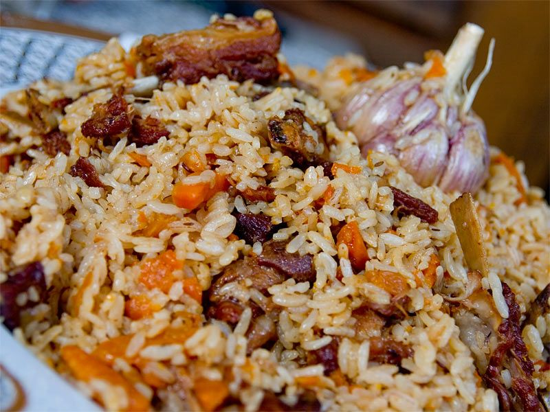

Resep Uzbek Plov (Nasi Pilaf)

Pilaf, pulao adalah hidangan dari beras atau bulgur yang ditumis bersama rempah-rempah di dalam minyak hingga kekuningan dan ditanak dengan air kaldu. Hidangan ini sangat umum dalam masakan Timur Tengah, Asia Tengah, Asia Selatan, dan Afrika Timur, dan Amerika Latin.
Bahan:
- 400 gr daging domba muda.
- 420-630 gr beras.
- 200-300 gr wortel.
- 150-200 gr bawang bombai.
- 200 gr lemak atau mentega.
Cara Membuat:
- Iris bawang bombai dan wortel secara memanjang.
- Potong daging domba menjadi bentuk dadu kecil dan goreng dalam wajan besar bersama lemak. Setelah matang, tambahkan bawang dan wortel dan goreng bersama dengan daging. Kemudian, masukkan 950 ml air serta garam dan merica sesuai selera. Masak hingga mendidih.
- Bilas beras tiga atau empat kali, kemudian masukan ke dalam panci bersama daging dan ratakan bagian atasnya.
- Tutup panci rapat-rapat dan masak selama 25-30 menit di atas api yang sangat kecil.
- Sajikan plov di piring dengan potongan daging domba di bagian atas. Taburi dengan irisan bawang bombai mentah.